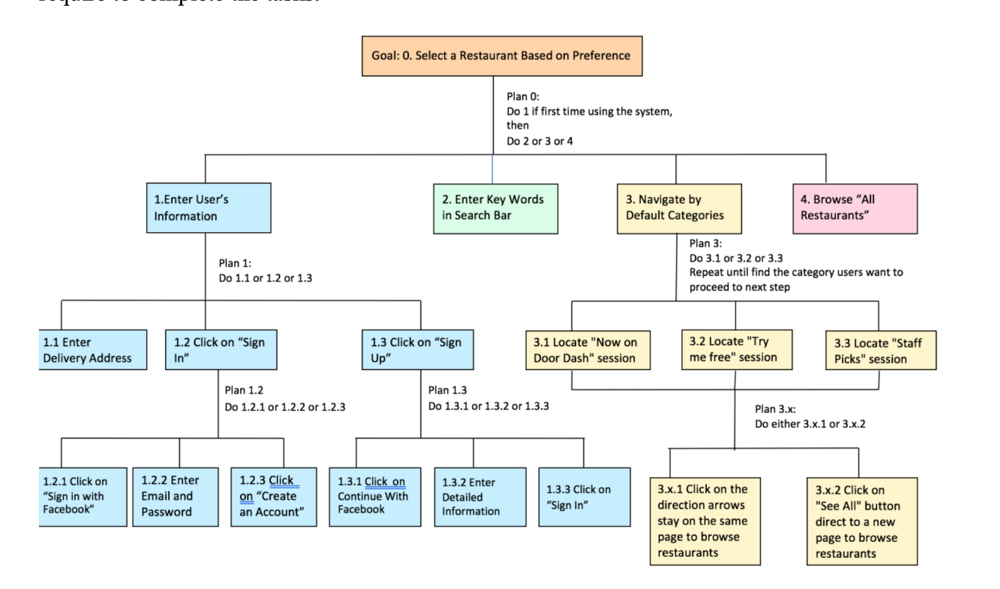

 Selecting a restaurant is considered the first step to achieve the goal of enjoying a door-to-door delivery of cuisines. To complete this function, four tasks are carried out. First, when users first open the system (DoorDash’s website), users are supposed to enter an address or choose to sign in/up with the website, and they can choose either login with facebook or login with their existing account by clicking corresponding buttons. After completing the last step, the main page of the system will pop up, users can start to browse the page, and check restaurants. At the stage, users can choose to use search bar as a tool to filter his/her preference, or navigate restaurants based on three default categories provided by the system, or scroll down to “All Restaurants” section to look at all restaurants. The following diagram shows detailed tasks and subtasks to accomplish the function, and the table below illustrates the information that users require to complete the tasks. Second ability of DoorDash allows users to browse menus and select their favourite dishes from the preferred restaurants. After entering the page of selected restaurant, each dish on the menu is listed under its category. Likewise, users can click on the box of food categories to look up items on the menu. Next step is to click on the box of the desired dish and add it to yellow cart icon. A new window pops up, users can add or avoid specific ingredients, and additional instructions can be attached regarding users’ requests. Users are able to update the quantities of the items; also, they have the option to choose the methods to solve any issues they might encounter during either delivery or order placement. Furthermore, users have the option to create a group order (the person who created the group order is responsible for the bill); the group ordering feature enables users to set a price limit, create a cart with other users, and select items independently. This function is executed after the users completed the previous functions, and hypothesizing that the users have selected their desired dishes to the shopping cart. First, by clicking on the “Checkout” icon on the right side of the website, the users are either led to sign in page (they are required to log into their account or sign up for a new account in order to proceed with payment) or the “Place Order” stage. Then, users are able to select the tip amounts, schedule delivery time, edit the delivery address, and add delivery instructions on the right side of the website. Subsequently, they enter the card information (coupon code, if any) for the payment section. Lastly, users can click on “Place Order” to complete the order. Assuming users have successfully transmitted the order, this function is mandatory for users to check the live status of their orders. Users are able to modify their information by clicking on “Change Address” to either select the existing address or add a new address. Also, users can edit information to dasher by clicking “Edit & Send to Dasher” and type the message. Moreover, users can view the receipt of their orders by scrolling down to the bottom of the page. Last, users can evaluate their experiences and provide feedback by rating after they receive orders. The following diagram and table show details of tasks and information that users require to complete an order.
The HTA provides clear procedures for the online delivery service offered by DoorDash. Based on the analysis of performed HTA and IR [Appendix 2], the five following major failures exposed: 1. unorganized presentation or categories of restaurants on the homepage: the randomly listed restaurants make users spend more time on the selection; 2. low usability of the posted trademarks on the homepage: the posted trademarks do not provide useful information for users, in terms of choosing the food. 3. the absence of graphic representation of dishes: there are limited pictures of dishes posted on the website, and the majority of dishes do not have a photographic representation on the website. 4. low adaptability to filter the user-typed keyword for manual search: a manual search only provides the restaurants which contain user-typed keywords within the restaurants’ name. 5. too frequent operations before placing the order: when the users reach the placing order stage, they cannot directly edit the information, but click a variety of buttons. Two main difficulties the team faced during the analysis of HTA are: 1. Research experiments and survey results on selected participants cannot represent the entire DoorDash user base, due to the limited number of participants. Biases still exist. 2. Limitations on finding experienced users. Most of the undergraduate students we investigated are more familiar with other online food ordering websites, such as UberEats and Foodora. The team generated the hierarchical task analysis of online food ordering website DoorDash through a process of analyzing main functions of the website, conducting an online survey, and observing participants completing assigned tasks. Four core functions are the general transformations for DoorDash to achieve the ultimate goal. They are listed below: 1. Make selection among a wide choice of restaurants 2. Decide the preferred food of choice 3. Place order and proceed to checkout 4. Track the live status of order The problem obtained from the HTAs and the additional data collected from surveys will help to proceed the prototyping and the usability evaluation stage of the redesign project.
Back to top: Back to top